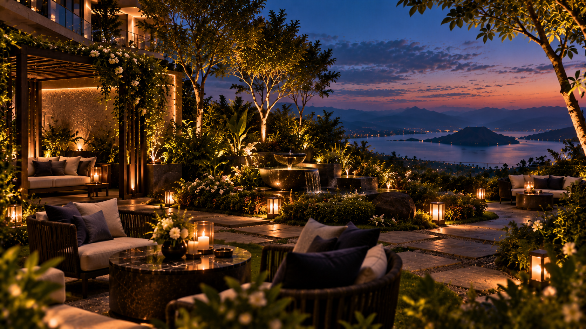

Weather-dependent
Stargazing
Settle into comfortable outdoor seating with blankets, warm beverages, and simple guidance for appreciating the night sky.
Conceptual experience; availability and weather would require confirmation.
LUNAIRE
Tagaytay · Fictional concept
Experiences · Conceptual samples
Lunaire experiences are imagined around quiet connection: a sky full of stars, a film shared in private, or a slow walk beneath garden lights.
Weather-dependent
Settle into comfortable outdoor seating with blankets, warm beverages, and simple guidance for appreciating the night sky.
Conceptual experience; availability and weather would require confirmation.

For couples and families
A cozy screening with comfortable seating and optional refreshments, designed for a relaxed night indoors.
Film titles, schedule, and refreshments are illustrative only.

Slow moments
Follow a gentle path through imagined garden spaces for reading, reflection, and unhurried conversation.
Garden access and facilities are fictional sample content.
A night shaped around you
Combine a peaceful walk, an intimate meal, a restorative treatment, or simply an uninterrupted moment of stillness. In a real implementation, each request would be reviewed and confirmed by the property.